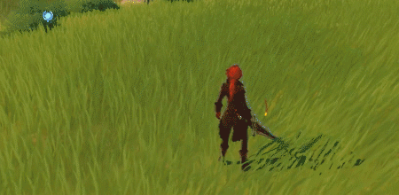

DILUC
 Voix anglaise : Sean Chiplock
Voix anglaise : Sean Chiplock
Voix japonaise : Kensho Ono
Étant l'homme le plus riche de Mondstadt, Diluc se présente toujours comme un jeune homme élégant et charmant, à l'image publique parfaite.
Sous ce masque se cache un guerrier à la volonté de fer forgée dans les flemmes qui ne recule devant rien pour protéger Mondstadt. Ne comptez pas sur lui pour ménager ses adversaires, il sera sans pitié jusqu'à la fin.

- Épée trempée -

Attaque
Attaque normale : Enchaîne jusqu'à 4 coups d'épée.
Attaque chargée : Succession d'entailles circulaires qui se termine sur un coup puissant.
Combo : 89,7% / 87,6% / 98,8% / 134%
Chargée circulaire : 68,8%
Chargée finale : 125%
Durée max : 5s
DGT durant la chute : 89,5%
DGT Chute basse/élevée : 179% / 224%
- Assaut brûlant -
Compétence
Inflige des DGT Pyro d'un coup de longue épée. Peut être exécutée 3 fois d'affilée.
DGT compétence : 94,4% / 97,6% / 129% TdR : 10s
- Aurore -
Déchaînement
Provoque une explosion de flammes qui repousse les ennemis, avant de converger sur son épée, pour renaître en un phénix qui inflige d'importants DGT Pyro aux ennemis sur sa route.
DGT Explosion : 204%
DGT d'épée : 198%
DGT continus : 60%
TdR : 12s
Durée Explosion : 8s
Coût énergie : 40
- Impitoyable -
Passif #1
Les attaques chargées de Diluc consomment 50% d'endurance en moins, et durent 3s de plus.
- Bénédiction du phénix -
Passif #2
Prolonge l'enchantement Pyro d'Aurore de 4s. Diluc inflige 20% de DGT Pyro supplémentaires pendant la durée de cet effet.
- Légende de l'aurore -
Passif #3
Lorsque vous forgez une épée à deux mains, 15% du minerai utilisé vous sera rendu.